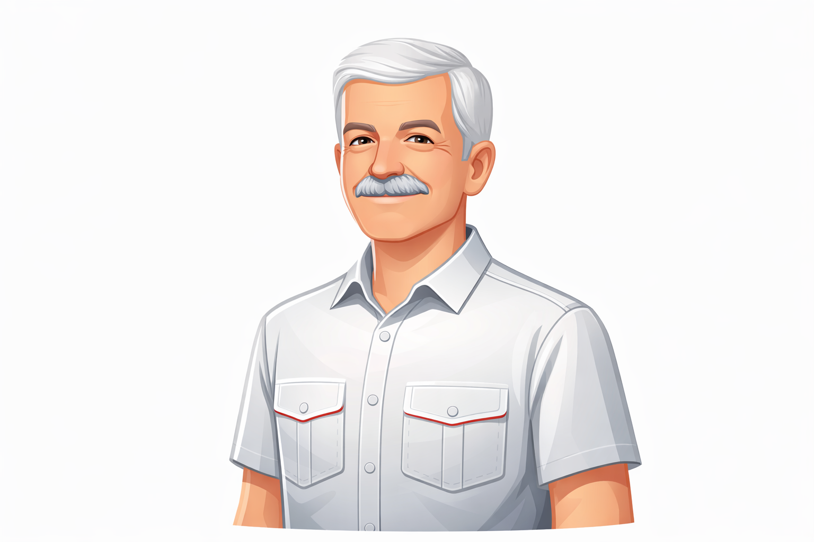

Шлях у професії

Історія, яка почалася не вчора.
Жива сторінка
Біографія
Людина, для якої автомобільна справа ніколи не була просто роботою. Це десятиліття практики, викладання, дороги, розмов із людьми та відповідальності за результат.
Коли досвід вимірюється не роками на папері, а тисячами реальних історій за кермом.
Понад чотири десятиліття
Досвід, який накопичувався в русі.
40+
років у продажі, підборі та доставці автомобілів із закордону.
1
спільний принцип для всіх послуг: спочатку ясність, потім дія.
∞
пояснень, порад і практичних моментів, які допомогли людям почуватись впевненіше.
За роки роботи сформувалося глибоке розуміння не лише автомобілів, а й самих клієнтських ситуацій: коли людині потрібен перший автомобіль, коли на кону сімейний бюджет, а коли важлива швидкість і точність.
Практика продажу й доставки авто з-за кордону навчила головного: красивий варіант не завжди означає правильний варіант. Саме тому так багато уваги приділяється перевірці, історії та реальним умовам угоди.
Навчання. Спокійно, послідовно, з повагою до темпу людини.
Підбір. Без хаосу, без зайвих ризиків, без красивих пасток.
Доставка. З увагою до деталей, документів і людського спокою.
Підхід до роботи
Без зайвого шуму, зате з увагою до людини.
У центрі цього підходу не просто автомобіль, а людина поруч із ним: її досвід, хвилювання, питання, бюджет і бажання прийняти рішення без тиску. Саме тому тут поєднуються викладацька витримка, практичний досвід і звичка доводити справу до результату.
Якщо потрібна порада, її можна отримати без перевантаження. Якщо потрібен повний супровід, він будується крок за кроком, прозоро й по-людськи.
Що це означає на практиці
Без різких рішень, без прихованих ризиків, без поспіху там, де важлива перевірка.
Для кого це
Для тих, кому потрібен не просто сервіс, а досвідчений супровід із реальним людським розумінням.
Далі вже разом
Якщо потрібна людина, яка давно в темі.
Головна сторінка сайту залишається точкою входу для заявки, консультації, підбору, перевірки або навчання. Тут же можна просто ближче зрозуміти, хто саме стоятиме поруч із вашим запитом.